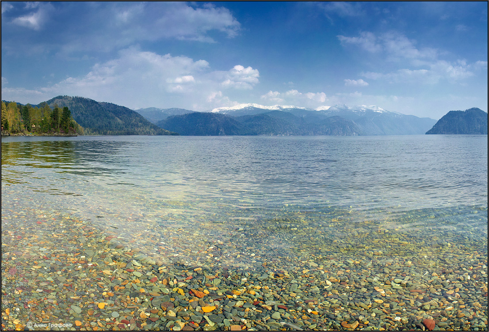
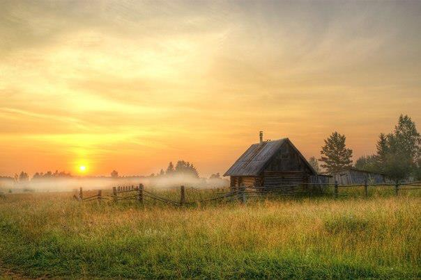
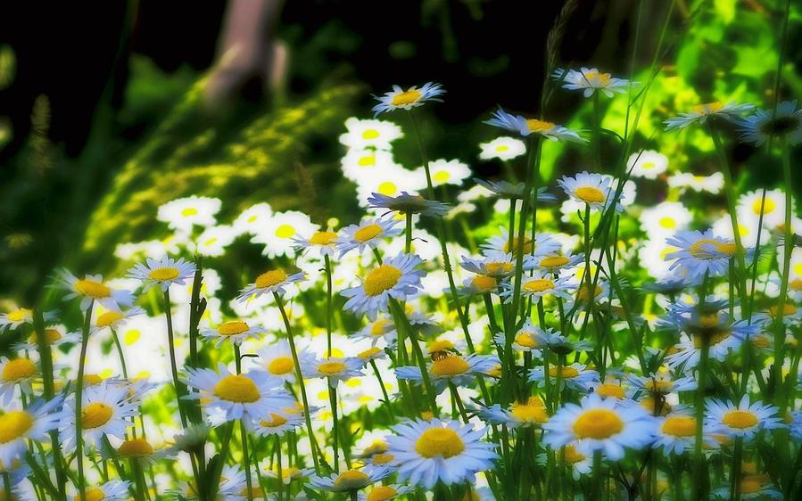

Authoring-Programm «Vedische Heilung das Erbe der Vorfahren» -
Authoring-Programm "vedischen Heil Erbe unserer Vorfahren," - Im Herzen von denen legten die alten vedischen Wissen Ruso-arischen Wurzeln und durchgeführt, für die langjährige persönliche Erfahrung der praktischen Behandlung Pankow Oleg und seine Frau Elena.
Das Programm zielt auf die Erforschungund Bewusstsein von Menschen mit genetischen vedischen generischen Gesetzen verantwortlich . Vedische wissen erlaubt es, den Schlüssel zu finden, der zur Wiederherstellung genetische Verbindung mit der Quelle und verbessern. Schlussfolgerungen Weltanschauung Kultur Vedische Familie, als die Wiedergeburt der Seele . Und zusammen im Rhythmus mit " Atem der Natur " geschieht die Wiederherstellung des Bewusstseins und die Vollkommenheit der Trinität : Geist, Seele und Körper.
Es umfasst die folgenden Themen: Wie man auf einem gesunden Weg Langlebigkeit? Wie Sie erreichen können, Harmonie und Verständnis in der Familie ? Wie ausgeglichen der materiellen und geistigen Gral Leben? Wie er zu gesunden , würdige Nachfolger und Erben des großen? Solche Fragen beantwortet werden können, nur dann, wenn Tribal-Speicher aktiviert ist Dort aufgezeichnet alle Geschäfte genetischen Vorfahren, der Götter und der Quelle. Diese genetischen Schlüssel zu öffnen viele Türen , hinter der sich der Reichtum der vedischen Wissens , die klugen Leute versteckt . Sie lernen, wie Sie sich schützen können bei der Arbeit mit den Kräften der Natur in der " karmischen Schlag "zu vermeiden und schaffen Karma bewussteKorrekturder . Die Bildung der tugendhaften und gutes Karma oder planen das weitere Schicksal mit Grundkenntnissen über das Ziel. Die Materialisierung Ereignisse in Ihrem Leben, und die höchste Bestimmung auf der Erde.
Unser Programm hilft, den Verstand und das Bewusstsein , Sie zu versöhnen , zu verstehen, die Ursachen der Krankheiten , für die eine gesunde Energiefeld des Körpers , um wieder Kraft der Jugend wieder, und mit den Energien der Liebe , der Freude , des Glücks , füllen Sie Heilung und Selbstheilung .
Das Ziel des Programms :
• Jeder Teilnehmer lernen, damit umzugehen mit den energetischen Ströme, die dringen in die Schichten Leben , Ihrem Weg. Genetische Stammes-Speicher ist im Fluss des Lebens und wurden гармонизированы .
• Die Teilnehmer lernen die Tu eine wichtige, positive Energie , um richtig zu lagern oder aufzusparen und dann teilen Sie Sie gekonnt und weiterzugeben .
• Die Teilnehmer lernen, mit Hilfe Ihrer geistigen und körperlichen Fähigkeiten wiederherstellen Ereignisse der Gesundheit und des Lebens durch Selbstregulierung . Es kann angepasst werden für die Selbsterkenntnis und Selbstheilung geistigen , mentalen und spirituellen Qualitäten .
• Die Teilnehmer lernen, sich selbst, Ihr Potenzial zu verwirklichen und erhalten Ihr Talent nutzen, um mit der vollen Verantwortung , Respekt und das richtige Verständnis der kosmischen Gesetze .
Im Programm der Seminare - Kern ist die "Vedische Kultur der Familie und das Erbe der Vorfahren " gliedert sich in drei " Phase der Renaissance. " Alle, die " Phase der Wiederbelebung der " erreicht ist innerhalb von drei Tagen , und alle drei "Phasen " in neun Tagen. Der Austausch von Programmen möglich an neun aufeinanderfolgenden Tagen, wie beschrieben, in drei teilen , nach drei Tage von einander. Diese Bedingungen hängen von der Bereitschaft der gesamten Gruppe. Das Programm richtet sich an Personen die 18 Jahre und älter , die haben einen freien Willen und das Streben nach Verbesserung und Heilung mit der vedischen Methoden .

Die erste Etappe :
Das Programm bietet Training Dreitägige mit dem wissen der richtigen Wahrnehmung der vedischen Wissens und die Umsetzung der Selbstheilungskräfte des Programms - " Vedische Generisches Heilung. " In Gesprächen mit den Teilnehmern die Motivation verfeinert - " der Sinn des Lebens und das Ziel . " Für die Teilnehmer, für die Sie alle bequem Zeitplan für ein treffen bereit .
1. die Dort hergestellten Bio-energetischen Diagnose, verursacht eine Harmonisierung der Gesundheit. Der Geist , die Seele und der Leib gebracht, die für eine harmonische Dreifaltigkeit. Chakra basieren auf den Veden , 16 - System валентной gelöscht und eine ausgewogene , negative Akkumulation , ausländische Energie und Emotionen werden gelöscht , der Körper Energie ( Aura ) gereinigt .
2. In den Prozess der Heilung individuell konfiguriert für jeden Teilnehmer , der "Magische Wörter" in Form einer poetischen Nachricht, die , das "himmlische Botschaft der Götter".
3. Ist eine Korrektur des Nabels in Form der traditionellen Massage duchgefürt ( der goldene Schnitt - energetische HARA - Zentrum) , denn hier ist alles auf der Psycho - emotionalen Zustand des Volkes ( Depression, Verzweiflung , unerklärliche sorgen , starke Gefühle , Stimmungsschwankungen, Wut und Hysterie , das fehlen von Willenskraft , Charaktereigenschaften ) erzeugt und verwaltet . Da viele der körperlichen, geistigen und spirituellen Problemen im Zusammenhang mit einer übertragung oder der Unterbrechung des Nabels .
4. Mit der alten Methode Wachs, Therapie - Teilnehmer behandelt werden. Mit dem Wachs-Behandlung Energiekörper (Aura ) ist , wie der mentalen Bereich ängste der Menschen , Angst , ängste , negative Einflüsse von außen gereinigt werden .
5. Individuell jeder Teilnehmer eine astrologische Analyse ( Horoskop ) Da ' Arisches vulgaris ist - " Christmas Carol die Gabe» befehligte .
6. Gibt es die Diagnose Iris mit dem neuen Russischen Methode vorgenommen, so dass jeder Teilnehmer erhält eine Bewertung schmarotzerhaften Vergiftung und Mineralstoffmangel " IridoSkrin » ( Gerät " IridoSkrin " ) . Jede Institution hat die Reflexion , dass spiegelt sich in der Regenbogenhaut (IRIS) , d.h. die änderungen in der Regenbogenhaut des Zeugen über die Unterschiede in den Körper und in der Arbeit der Einrichtungen . Die Analyse der Iris wird dazu beitragen, die Entstehung der Erkrankung. Es ist ein individuelles Paket Reinigung von Parasiten (Z. B. Pilze, Viren, Bakterien , Helminthen , Nematoden und andere ) zusammen mit pflanzlichen Präparaten , die gleichen normalen Mikroflora und die Entwicklung der Immunität wieder.
Die zweite Etappe :
Das Programm bietet drei Tage Training beinhaltet eine Reihe von Workshops wichtigsten Themen - Grundkurs "Vedische Kultur der Familie und der Art der Erbe der Vorfahren" :
Der erste Tag :Einführung in das Thema :
• " Veda , wissen - Leben »
• meditative übungen - " Zucht-Sterne-Haus oder das Zeichen des Tierkreises »
Der zweite Tag : Grundlagen der Muttersprache der vedischen Kultur :
• " Vedische der Schlüssel in der Entwicklung des Menschen "
• meditative übungen - " Stamm Kristall »
Der Dritte Tag : Grundlagen der vedischen Psychologie :
• «Durch die Vergangenheit in die Zukunft , mit dem Schutz der Gegenwart»
• meditative übungen - " die Kraft der Urahnstammes »
Der Unterricht wird von 10 Uhr bis 19 Uhr , und es zwei Pausen ( etwa 30 Minuten ) geplant .

Der Dritte Schritt :
Das Programm bietet ein dreitägiges Coaching und in praktischen übungen - " Vedische Generisches Heilung » gerichtet . Das lernen ist abhängig von der Bereitschaft der Teilnehmer-und Wetterbedingungen , das heißt, vorzugsweise an der frischen Luft . Das Programm der Praxis umfasst :
Der erste Tag :
• Die Teilnehmer lernen die Magie (High Priest ) quadratische zusammen. Ansicht die vedischen Porträts Leben Persönlichkeiten (die von der Geburt innerhalb eines bestimmten ) , der Zeitplan der Zeitplan wichtige Tätigkeit , die Lebenszyklen von Einheiten und Epochen .
• meditative übungen ( die dynamische und statistische Meditation ) - "das Erwachen der Göttin " und " das Wesen der Männer - Kräfte »
Der zweite Tag :
• die slawischen gymnastik-und Atemübungen .
•Einführung in die traditionellen vedischen Feiern und Feste ( die Kraft der Reigen der Kraft der Natur der Elemente) .
• meditative übungen ( die dynamische und statistische Meditation ) - "Relax-Meditation - die Natur der Elemente »
Der Dritte Tag :
• Seminar zum traditionellen Handwerkskunst .
• meditative übungen ( die dynamische und statistische Meditation ) - " Neun Chakra-Farben » und « Raum der Liebe»
• Am Ende des Programms - Wedsche ( Thing) am Lagerfeuer .

Als Abschluss der Programme , die der " Vedischen Generika-Heilung " - die erzielten Ergebnisse jeder Teilnehmer gefördert wird, in einem anderen unabhängigen , geistigen und die geistige Arbeit. Alle Teilnehmer individuelle Empfehlungen in Form von " Hausaufgaben " für die selbständige Arbeit gegeben . Sie schlug vor, die weitere Materialien auf DVD und weitere Literatur. Jeder Teilnehmer kann innerhalb der nächsten 3 Monate , Coaching-Manager kostenlos beraten .
Nur die gemeinsamen Anstrengungen der Heiler und der Wunsch der Menschen, sich zu ändern , neu zu überdenken und die Verantwortung für Ihre Gesundheit bringen kann sehr positive Zeit mit Ihnen. Wir helfen, die Ursache zu verstehen , zu beheben , und der Rest hängt von Ihnen ab!
Seien Sie in völliger Harmonie der Trinität : Geist , Seele und Körper! Immer gesund, glücklich, glücklich, erfolgreich , zu lieben und geliebt!